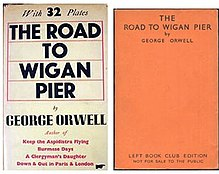

“One sometimes gets the impression that the mere words ‘Socialism’ and ‘Communism’ draw towards them with magnetic force every fruit-juice drinker, nudist, sandal-wearer, sex-maniac, Quaker, ‘Nature Cure’ quack, pacifist, and feminist in England.”...
“It is only when you meet someone of a different culture from yourself that you begin to realise what your own beliefs really are.”...
